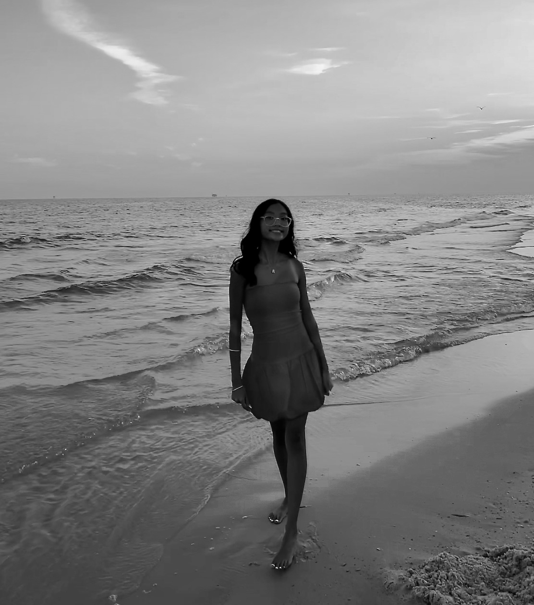

Effortless Experience
Designed to feel relaxed, natural, and stress-free. Guiding you every step of the way with intention.
Behind the lens
Kaylie Destiny Photography is built on serving others with excellence while capturing moments that will be cherished for generations to come. With a passion for timeless imagery and meaningful connection, every session is designed to feel intentional, effortless, and authentic. More than just photographs, these are memories preserved with care — telling your story through genuine emotion, beauty, and purpose.

Hi! I’m Kaylie — a photographer and creative passionate about capturing people, moments, and stories with intention, elegance, and authenticity. I believe photography is more than just images; it’s preserving the beauty, emotion, and purpose woven into every season of life.
My style blends timeless luxury with genuine connection, creating an experience that feels both elevated and personal. Whether I’m photographing portraits, couples, families, or branding sessions, my goal is to create imagery that is refined, meaningful, and true to who you are.
My faith is the foundation behind everything I create. I believe we are all fearfully and wonderfully made, and I strive to reflect that beauty through every session and every detail. Photography, to me, is an opportunity to serve people well, create with excellence, and capture moments that carry lasting value.
I want every client to feel comfortable, confident, and seen — not just through the lens, but through the entire experience. From the planning process to the final gallery, I aim to provide a professional, thoughtful, and luxury experience that allows your story to be told beautifully and authentically.
Thank you for being here and trusting me with your moments. It’s truly an honor to create something meaningful with you.
- Kaylie Destiny
Designed to feel relaxed, natural, and stress-free. Guiding you every step of the way with intention.
Cinematic timeless editing that enhances your images while keeping every moment natural and authentic.
Planned portraits, candid details and meaningful moments documented & made to love for a lifetime
The process
Send your date, location, and session vision. You will receive availability and a recommended collection.
We refine wardrobe, timeline, locations, and must-have shots so the session has a clear creative direction.
You get relaxed guidance, beautiful light, and space for natural moments to unfold.
Your edited online gallery arrives ready to download, share, and love.